…
This is an introduction to spatial data manipulation with R and the terra package. In this context “spatial data” refers to data about geographical locations, that is, places on earth. So to be more precise, we should speak about geospatial data, but we use the shorthand spatial.
The package terra is now the package of reference for
manipulating spatial data, spatial analysis and modeling in R. It is a
very large topics and here we cover the basics of data manipulation.
Because of the many changes happening in the past few years related to spatial data analysis in R, this section of the course is still under developement. The information below are largely extracted form Terra online tutorial available here.
Spatial data
Spatial phenomena can generally be thought of as either discrete objects with clear boundaries or as a continuous phenomena that can be observed everywhere, but that do not have natural boundaries. Discrete spatial objects may refer to a river, road, country, town, or a research site. Examples of continuous phenomena, or spatial fields, include elevation, temperature, and air quality.
Spatial objects are usually represented by vector data. Such data consists of a description of the geometry or shape of the objects, and normally also includes additional variables. For example, a vector data set may represent the borders of the countries of the world (geometry), and also store their names and the size of their population in 2015; or it may have the geometry of the roads in an area, as well as their type and names. These additional variables are often referred to as attributes. Continuous spatial data (fields) are usually represented with a raster data structure. We discuss these two data types in turn.
Vector data
The main vector data types are points, lines and polygons. In all cases, the geometry of these data structures consists of sets of coordinate pairs (x, y). Points are the simplest case. Each point has one coordinate pair, and n associated variables. For example, a point might represent a place where a rat was trapped, and the attributes could include the date it was captured, the person who captured it, the species size and sex, and information about the habitat. It is also possible to combine several points into a multi-point structure, with a single attribute record. For example, all the coffee shops in a town could be considered as a single geometry.
The geometry of lines is a just a little bit more complex. First note that in this context, the term line refers to a set of one or more polylines (connected series of line segments). For example, in spatial analysis, a river and all its tributaries could be considered as a single line (but they could also also be several lines, perhaps one for each tributary river). Lines are represented as ordered sets of coordinates (nodes). The actual line segments can be computed (and drawn on a map) by connecting the points. Thus, the representation of a line is very similar to that of a multi-point structure. The main difference is that for a line the ordering of the points is important, because we need to know in which order the points should be connected.
A network (e.g. a road or river network), or spatial graph, is a special type of lines geometry where there is additional information about things like flow, connectivity, direction, and distance.
A polygon refers to a set of closed polylines. The geometry is very similar to that of lines, but to close a polygon the last coordinate pair coincides with the first pair. A complication with polygons is that they can have holes (that is a polygon entirely enclosed by another polygon, that serves to remove parts of the enclosing polygon (for example to show an island inside a lake. Also, valid polygons do not self-intersect (but it is OK for a line to self-cross). Again, multiple polygons can be considered as a single geometry. For example, Indonesia consists of many islands. Each island can be represented by a single polygon, but together then can be represent a single (multi-) polygon representing the entire country.
Raster data
Raster data is commonly used to represent spatially continuous phenomena such as elevation. A raster divides the world into a grid of equally sized rectangles (referred to as cells or, in the context of satellite remote sensing, pixels) that all have one or more values (or missing values) for the variables of interest. A raster cell value should normally represent the average (or majority) value for the area it covers. However, in some cases the values are actually estimates for the center of the cell (in essence becoming a regular set of points with an attribute).
In contrast to vector data, in raster data the geometry is not explicitly stored as coordinates. It is implicitly set by knowing the spatial extent and the number or rows and columns in which the area is divided. From the extent and number of rows and columns, the size of the raster cells (spatial resolution) can be computed. While raster cells can be thought of as a set of regular polygons, it would be very inefficient to represent the data that way as coordinates for each cell would have to be stored explicitly. Doing so would also dramatically increase processing time.
Continuous surface data are sometimes stored as triangulated irregular networks (TINs); these are not discussed here.
Simple representation of spatial data
The basic data types in R are numbers, characters, logical (TRUE or FALSE) and factor values. Values of a single type can be combined in vectors and matrices, and variables of multiple types can be combined into a data.frame. We can represent (only very) basic spatial data with these data types. Let’s say we have the location (represented by longitude and latitude) of ten weather stations (named A to J) and their annual precipitation.
In the example below we make a very simple map. Note that a map is special type of plot (like a scatter plot, barplot, etc.). A map is a plot of geospatial data that also has labels and other graphical objects such as a scale bar or legend. The spatial data itself should not be referred to as a map.
name <- LETTERS[1:10]
longitude <- c(-116.7, -120.4, -116.7, -113.5, -115.5,
-120.8, -119.5, -113.7, -113.7, -110.7)
latitude <- c(45.3, 42.6, 38.9, 42.1, 35.7, 38.9,
36.2, 39, 41.6, 36.9)
stations <- cbind(longitude, latitude)
# Simulated rainfall data
set.seed(0)
precip <- round((runif(length(latitude))*10)^3)A map of point locations is not that different from a basic x-y scatter plot. Below is a plot (a map in this case) that shows the location of the weather stations, and the size of the dots is proportional to the amount of precipitation. The point size is set with argument cex.
psize <- 1 + precip/500
plot(stations, cex=psize, pch=20, col='red', main='Precipitation')
# add names to plot
text(stations, name, pos=4)
# add a legend
breaks <- c(100, 250, 500, 1000)
legend.psize <- 1+breaks/500
legend("topright", legend=breaks, pch=20, pt.cex=legend.psize, col='red', bg='gray')
Note that the data are represented by “longitude, latitude”, in that order, do not use “latitude, longitude” because on most maps latitude (North/South) is used for the vertical axis and longitude (East/West) for the horizontal axis. This is important to keep in mind, as it is a very common source of mistakes!
We can add multiple sets of points to the plot, and even draw lines and polygons:
lon <- c(-116.8, -114.2, -112.9, -111.9, -114.2, -115.4, -117.7)
lat <- c(41.3, 42.9, 42.4, 39.8, 37.6, 38.3, 37.6)
x <- cbind(lon, lat)
plot(stations, main='Precipitation')
polygon(x, col='blue', border='light blue')
lines(stations, lwd=3, col='red')
points(x, cex=2, pch=20)
points(stations, cex=psize, pch=20, col='red', main='Precipitation')
The above illustrates how numeric vectors representing locations can
be used to draw simple maps. It also shows how points can (and typically
are) represented by pairs of numbers. A line and a polygon can be
represented by a number of these points. Polygons need to “closed”, that
is, the first point must coincide with the last point, but the
polygon function took care of that for us.
There are cases where a simple approach like this may suffice and you
may come across this in older R code or packages. Likewise, raster data
could be represented by a matrix or higher-order array. Particularly
when only dealing with point data such an approach may be practical. For
example, a spatial data set representing points and attributes could be
made by combining geometry and attributes in a single
data.frame.
## longitude latitude name precip
## 1 -116.7 45.3 A 721
## 2 -120.4 42.6 B 19
## 3 -116.7 38.9 C 52
## 4 -113.5 42.1 D 188
## 5 -115.5 35.7 E 749
## 6 -120.8 38.9 F 8
## 7 -119.5 36.2 G 725
## 8 -113.7 39.0 H 843
## 9 -113.7 41.6 I 289
## 10 -110.7 36.9 J 249However, wst is a data.frame and R does not
automatically understand the special meaning of the first two columns,
or to what coordinate reference system it refers (longitude/latitude, or
perhaps UTM zone 17S, or ….?).
Moreover, it is non-trivial to do some basic spatial operations. For example, the blue polygon drawn on the map above might represent a state, and a next question might be which of the 10 stations fall within that polygon. And how about any other operation on spatial data, including reading from and writing data to files? To facilitate such operation a number of R packages have been developed that define new spatial data types that can be used for this type of specialized operations.
Recent packages in R that define such spatial data structures include
terra and sf. These packages replace a set of
older packages including raster and sp.
We mostly use the terra package in these materials. You
can install the latest released version of terra from CRAN with
install.packages("terra").
Reading and writing spatial data
Reading and writing spatial data is complicated by the fact that there are many different file formats. However, there are a few formats that are most common that we discuss here.
Vector files
The shapefile is the most commonly used file format for vector data (if you are not familiar with this file format, an important thing to understand is that a shapefile is really a set of at least three (ideally four) files, with all the same name, but different extension. For shapefile x you must have, in the same directory, these three files: x.shp, x.shx, x.dbf, and ideally also x.prj.
It is easy to read and write such files. Here we use a shapefile that
comes with the terra package.
Reading
Let’s first download some spatial data of Taiwan using the
geodata package:
library (geodata)
#TWN <- gadm(country="TWN", level=1, path=tempdir())
#TWN <- gadm(country="TWN", level=1, path="./data"
TWN <- vect('data/gadm/gadm41_TWN_1_pk.rds')
TWN
# check for ?gadmUsing a .shp file, we can use the vect function from the
terra package to read the file. First:
# example using .shp file
library(terra)
filename1 <- system.file("ex/lux.shp", package="terra")
basename(filename1)## [1] "lux.shp"We use the system.file function to get the full path name of the file’s location. We need to do this as the location of this file depends on where the terra package is installed. You should not use the system.file function for your own files. It only serves for creating examples with data that ship with R. With your own files, just use the filename (and path if the file is not in your working directory).
Then:
## class : SpatVector
## geometry : polygons
## dimensions : 12, 6 (geometries, attributes)
## extent : 5.74414, 6.528252, 49.44781, 50.18162 (xmin, xmax, ymin, ymax)
## source : lux.shp
## coord. ref. : lon/lat WGS 84 (EPSG:4326)
## names : ID_1 NAME_1 ID_2 NAME_2 AREA POP
## type : <num> <chr> <num> <chr> <num> <int>
## values : 1 Diekirch 1 Clervaux 312 18081
## 1 Diekirch 2 Diekirch 218 32543
## 1 Diekirch 3 Redange 259 18664The vect function returns SpatVector
objects. It is important to recognise the difference between this type
of R object (SpatVector), and the file (“shapefile”) that
was used to create it. Thus, you should never say “I have a shapefile in
R”, say “I have a SpatVector of polygons in R”, (and in some cases you
can add “created from a shapefile”). The shapefile is one of many file
formats for vector data.
Raster files
The terra package can read and write several raster file formats.
Reading raster data
Get raster data of taiwan elevation using the geodata
package:
## class : SpatRaster
## dimensions : 636, 684, 1 (nrow, ncol, nlyr)
## resolution : 0.008333333, 0.008333333 (x, y)
## extent : 116.6, 122.3, 20.5, 25.8 (xmin, xmax, ymin, ymax)
## coord. ref. : lon/lat WGS 84 (EPSG:4326)
## source : TWN_elv_msk.tif
## name : TWN_elv_msk
## min value : -12
## max value : 3741Using a .tif file, we can use the rast function from the
terra package to read the file. Firstusing example file
from the package:
## [1] "logo.tif"Now we can do
## class : SpatRaster
## dimensions : 77, 101, 3 (nrow, ncol, nlyr)
## resolution : 1, 1 (x, y)
## extent : 0, 101, 0, 77 (xmin, xmax, ymin, ymax)
## coord. ref. : Cartesian (Meter)
## source : logo.tif
## colors RGB : 1, 2, 3
## names : red, green, blue
## min values : 0, 0, 0
## max values : 255, 255, 255Note that x is a SpatRaster of three layers (“bands”). We can subset it to get a single layer.
## class : SpatRaster
## dimensions : 77, 101, 1 (nrow, ncol, nlyr)
## resolution : 1, 1 (x, y)
## extent : 0, 101, 0, 77 (xmin, xmax, ymin, ymax)
## coord. ref. : Cartesian (Meter)
## source : logo.tif
## name : green
## min value : 0
## max value : 255The same approach holds for other raster file formats, including GeoTiff, NetCDF, Imagine, and ESRI Grid formats.
Writing raster data
Use writeRaster to write raster data. You must provide a
SpatRaster and a filename. The file format will be guessed from the
filename extension. If that does not work you can provide an argument
like format=GTiff. Note the argument
overwrite=TRUE and see ?writeRaster for more
arguments, such as datatype= to set the a specific datatype
(e.g., integer).
## class : SpatRaster
## dimensions : 636, 684, 1 (nrow, ncol, nlyr)
## resolution : 0.008333333, 0.008333333 (x, y)
## extent : 116.6, 122.3, 20.5, 25.8 (xmin, xmax, ymin, ymax)
## coord. ref. : lon/lat WGS 84 (EPSG:4326)
## source : ele.tif
## name : TWN_elv_msk
## min value : -12
## max value : 3741Coordinate Reference Systems
A very important aspect of spatial data is the coordinate reference system (CRS) that is used. For example, a location of (140, 12) is not meaningful if you do know where the origin (0,0) is and if the x-coordinate is 140 meters, feet, nautical miles, kilometers, or perhaps degrees away from the x-origin.
Coordinate Reference Systems (CRS)
Angular coordinates
The earth has an irregular spheroid-like shape. The natural coordinate reference system for geographic data is longitude/latitude. This is an angular coordinate reference system. The latitude (phi) of a point is the angle between the equatorial plane and the line that passes through a point and the center of the Earth. Longitude (lambda) is the angle from a reference meridian (lines of constant longitude) to a meridian that passes through the point.
Obviously we cannot actually measure these angles. But we can estimate them. To do so, you need a model of the shape of the earth. Such a model is called a “datum”. The simplest datums are a spheroid (a sphere that is “flattened” at the poles and bulges at the equator). More complex datums allow for more variation in the earth’s shape. The most commonly used datum is called WGS84 (World Geodesic System 1984). This is very similar to NAD83 (The North American Datum of 1983). Other, local datums exist to more precisely record locations for a single country or region.
So the basic way to record a location is a coordinate pair in degrees and a reference datum. Sometimes people say that their coordinates are “in WGS84”. That does not tell us much; they typically mean to say that they are longitude/latitude relative to the WGS84 datum. Likewise longitude/latitude coordinates are sometimes referred to as “geographic” coordinates. That is rather odd, if planar coordinate reference systems (see below) are not geographic, what are they?
Projections
A major question in spatial analysis and cartography is how to transform this three dimensional angular system to a two dimensional planar (sometimes called “Cartesian”) system. A planar system is easier to use for certain calculations and required to make maps (unless you have a 3-d printer). The different types of planar coordinate reference systems are referred to as “projections”. Examples are “Mercator”, “UTM”, “Robinson”, “Lambert”, “Sinusoidal” and “Albers”.
There is not one best projection. Some projections can be used for a map of the whole world; other projections are appropriate for small areas only. One of the most important characteristics of a map projection is whether it is “equal area” (the scale of the map is constant) or “conformal” (the shapes of the geographic features are as they are seen on a globe). No two dimensional map projection can be both conformal and equal-area (but they can be approximately both for smaller areas, e.g. UTM, or Lambert Equal Area for a larger area), and some are neither.
Notation
A planar CRS is defined by a projection, datum, and a set of parameters. The parameters determine things like where the center of the map is. The number of parameters depends on the projection. It is therefore not trivial to document a projection used, and several systems exist. In R we used to depend on the PROJ.4 notation. PROJ.4 is the name of a software library that is commonly used for CRS transformation. You can find many more of these on spatialreference.org
The PROJ.4 notation is no longer fully supported in the newer versions of the library (that was renamed to PR\(\phi\)J). It still works for CRSs with the WGS84 datum. For other cases you have to use a EPSG code (if available) or a Well-Known-Text notation.
Most commonly used CRSs have been assigned a “EPSG code” (EPSG stands
for European Petroleum Survey Group). This is a unique ID that can be a
simple way to identify a CRS. For example EPSG:27561 is
equivalent to
+proj=lcc +lat_1=49.5 +lat_0=49.5 +lon_0=0 +k_0=0.999877341 +x_0=6 +y_0=2 +a=6378249.2 +b=6356515 +towgs84=-168,-60,320,0,0,0,0 +pm=paris +units=m +no_defs.
Now let’s look at an example with a spatial data set in R.
## class : SpatVector
## geometry : polygons
## dimensions : 12, 6 (geometries, attributes)
## extent : 5.74414, 6.528252, 49.44781, 50.18162 (xmin, xmax, ymin, ymax)
## source : lux.shp
## coord. ref. : lon/lat WGS 84 (EPSG:4326)
## names : ID_1 NAME_1 ID_2 NAME_2 AREA POP
## type : <num> <chr> <num> <chr> <num> <int>
## values : 1 Diekirch 1 Clervaux 312 18081
## 1 Diekirch 2 Diekirch 218 32543
## 1 Diekirch 3 Redange 259 18664We can inspect the coordinate reference system like this.
## [1] "GEOGCRS[\"WGS 84\",\n DATUM[\"World Geodetic System 1984\",\n ELLIPSOID[\"WGS 84\",6378137,298.257223563,\n LENGTHUNIT[\"metre\",1]]],\n PRIMEM[\"Greenwich\",0,\n ANGLEUNIT[\"degree\",0.0174532925199433]],\n CS[ellipsoidal,2],\n AXIS[\"geodetic latitude (Lat)\",north,\n ORDER[1],\n ANGLEUNIT[\"degree\",0.0174532925199433]],\n AXIS[\"geodetic longitude (Lon)\",east,\n ORDER[2],\n ANGLEUNIT[\"degree\",0.0174532925199433]],\n ID[\"EPSG\",4326]]"Assigning CRS
Sometimes we have data without a CRS. This can be because the file
used was incomplete, or perhaps because we created the data ourselves
with R code. In that case we can assign the CRS if we know what it
should be. Here I first remove the CRS of pp and then I set
it again.
## [1] ""## [1] "GEOGCRS[\"unknown\",\n DATUM[\"World Geodetic System 1984\",\n ELLIPSOID[\"WGS 84\",6378137,298.257223563,\n LENGTHUNIT[\"metre\",1]],\n ID[\"EPSG\",6326]],\n PRIMEM[\"Greenwich\",0,\n ANGLEUNIT[\"degree\",0.0174532925199433],\n ID[\"EPSG\",8901]],\n CS[ellipsoidal,2],\n AXIS[\"longitude\",east,\n ORDER[1],\n ANGLEUNIT[\"degree\",0.0174532925199433,\n ID[\"EPSG\",9122]]],\n AXIS[\"latitude\",north,\n ORDER[2],\n ANGLEUNIT[\"degree\",0.0174532925199433,\n ID[\"EPSG\",9122]]]]"Note that you should not use this approach to change the CRS of a data set from what it is to what you want it to be. Assigning a CRS is like labeling something. You need to provide the label that corresponds to the item. Not to what you would like it to be. For example if you label a bicycle, you can write “bicycle”. Perhaps you would prefer a car, and you can label your bicycle as “car” but that would not do you any good. It is still a bicycle. You can try to transform your bicycle into a car. That would not be easy. Transforming spatial data is easier.
Transforming vector data
We can transform these data to a new data set with another CRS using
the project method.
Here we use the Robinson projection. First we need to find the correct notation.
Now use it:
## class : SpatVector
## geometry : polygons
## dimensions : 12, 6 (geometries, attributes)
## extent : 471320.7, 536010.5, 5269709, 5345677 (xmin, xmax, ymin, ymax)
## coord. ref. : +proj=robin +lon_0=0 +x_0=0 +y_0=0 +datum=WGS84 +units=m +no_defs
## names : ID_1 NAME_1 ID_2 NAME_2 AREA POP
## type : <num> <chr> <num> <chr> <num> <int>
## values : 1 Diekirch 1 Clervaux 312 18081
## 1 Diekirch 2 Diekirch 218 32543
## 1 Diekirch 3 Redange 259 18664After the transformation, the units of the geometry are no longer in degrees, but in meters away from (longitude=0, latitude=0). The spatial extent of the data is also in these units.
We can backtransform to longitude/latitude:
Transforming raster data
Vector data can be transformed from lon/lat coordinates to planar and back without loss of precision. This is not the case with raster data. A raster consists of rectangular cells of the same size (in terms of the units of the CRS; their actual size may vary). It is not possible to transform cell by cell. For each new cell, values need to be estimated based on the values in the overlapping old cells. If the values are categorical data, the “nearest neighbor” method is commonly used. Otherwise some sort of interpolation is employed (e.g. “bilinear”).
Because projection of rasters affects the cell values, in most cases you will want to avoid projecting raster data and rather project vector data. But here is how you can project raster data.
## class : SpatRaster
## dimensions : 40, 40, 1 (nrow, ncol, nlyr)
## resolution : 0.5, 0.5 (x, y)
## extent : -110, -90, 40, 60 (xmin, xmax, ymin, ymax)
## coord. ref. : lon/lat WGS 84
## source(s) : memory
## name : lyr.1
## min value : 1
## max value : 1600
The simplest approach is to provide a new crs (the Robinson crs in this case):
## [1] "+proj=robin +datum=WGS84"## [1] "PROJCRS[\"unknown\",\n BASEGEOGCRS[\"unknown\",\n DATUM[\"World Geodetic System 1984\",\n ELLIPSOID[\"WGS 84\",6378137,298.257223563,\n LENGTHUNIT[\"metre\",1]],\n ID[\"EPSG\",6326]],\n PRIMEM[\"Greenwich\",0,\n ANGLEUNIT[\"degree\",0.0174532925199433],\n ID[\"EPSG\",8901]]],\n CONVERSION[\"unknown\",\n METHOD[\"Robinson\"],\n PARAMETER[\"Longitude of natural origin\",0,\n ANGLEUNIT[\"degree\",0.0174532925199433],\n ID[\"EPSG\",8802]],\n PARAMETER[\"False easting\",0,\n LENGTHUNIT[\"metre\",1],\n ID[\"EPSG\",8806]],\n PARAMETER[\"False northing\",0,\n LENGTHUNIT[\"metre\",1],\n ID[\"EPSG\",8807]]],\n CS[Cartesian,2],\n AXIS[\"(E)\",east,\n ORDER[1],\n LENGTHUNIT[\"metre\",1,\n ID[\"EPSG\",9001]]],\n AXIS[\"(N)\",north,\n ORDER[2],\n LENGTHUNIT[\"metre\",1,\n ID[\"EPSG\",9001]]]]"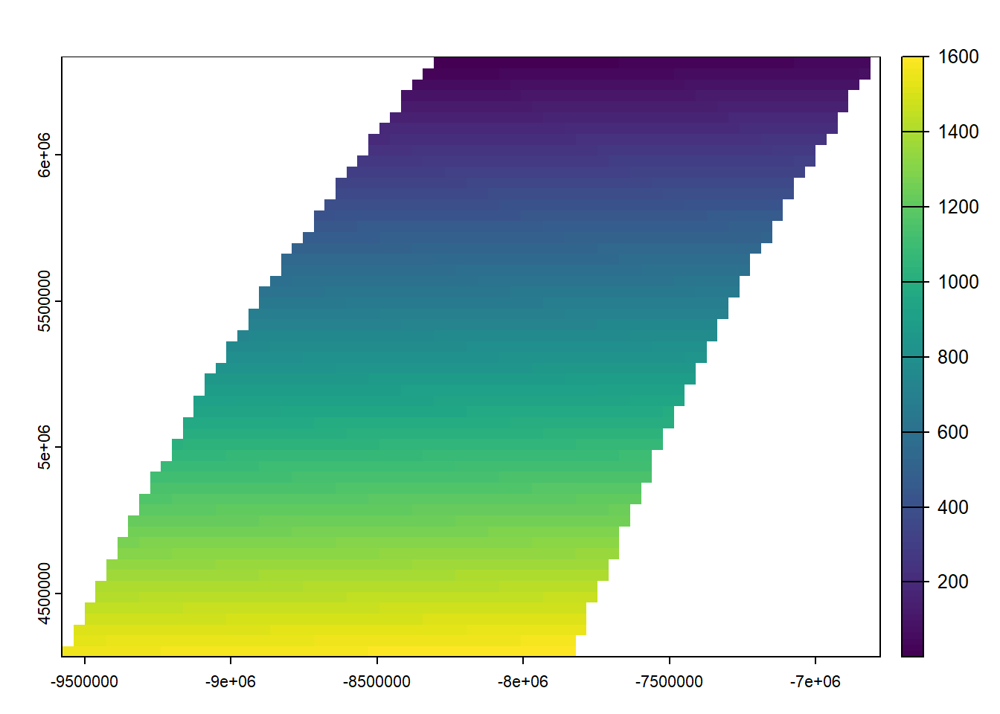
But that is not a good method. As you should want to assure that you project fits to exactly the raster parameters you need (so that it lines up with other raster data you are using).
To have this kind of control, provide an existing SpatRaster with the geometry you desire. That is generally the best way to project raster. By providing an existing SpatRaster, such that your newly projected data perfectly aligns with it. In this example we do not have an existing SpatRaster object, so we create from the result obtained above.
Now project, and note the change in the coordinates.
## class : SpatRaster
## dimensions : 10, 14, 1 (nrow, ncol, nlyr)
## resolution : 2e+05, 2e+05 (x, y)
## extent : -9577685, -6777685, 4283463, 6283463 (xmin, xmax, ymin, ymax)
## coord. ref. : +proj=robin +lon_0=0 +x_0=0 +y_0=0 +datum=WGS84 +units=m +no_defs
## source(s) : memory
## name : lyr.1
## min value : 111.1541
## max value : 1523.5796
For raster based analysis it is often important to use equal area projections, particularly when large areas are analyzed. This will assure that the grid cells are all of same size, and therefore comparable to each other, especially when count data are used.
Vector data manipulation
This chapter illustrates some ways in which we can manipulate vector data. We start with an example SpatVector that we read from a shapefile.
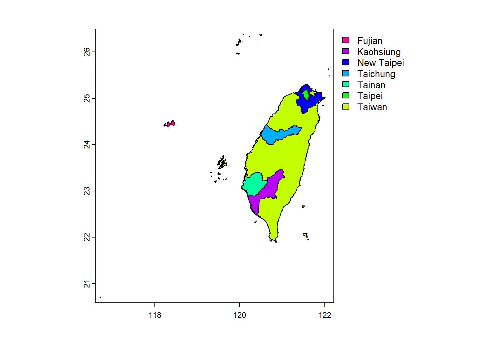
We can plot these data in many ways. For example:
We can see this data set is incomplete for Taiwan. Let’s get some data directly from Taiwan
url <- 'https://data.moi.gov.tw/MoiOD/System/DownloadFile.aspx?DATA=72874C55-884D-4CEA-B7D6-F60B0BE85AB0'
path1 <- tempfile(fileext = ".zip")
if (file.exists(path1)) 'file alredy exists' else download.file(url, path1, mode="wb")
zip::unzip(zipfile = path1,exdir = 'data')Make SpatialVector:
Make the new plot:
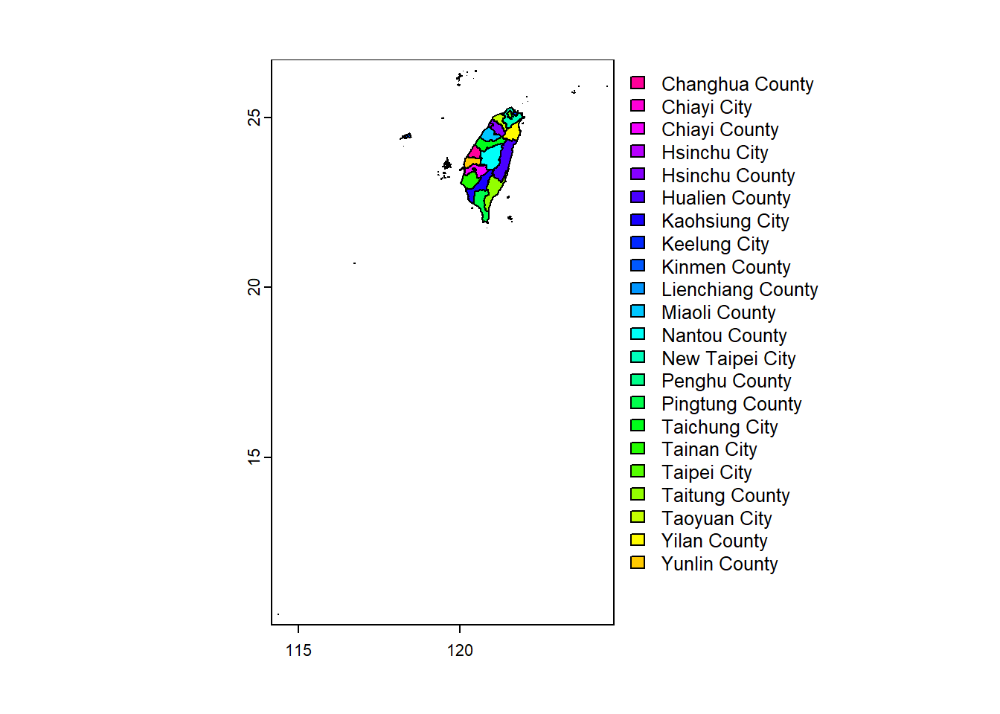
Basics
Geometry and attributes
To extract the attributes (data.frame) from a SpatVector, use:
You can also extract the geometry as a a matrix (this is rarely needed).
## geom part x y hole
## [1,] 1 1 119.9645 25.94552 0
## [2,] 1 1 119.9643 25.94549 0
## [3,] 1 1 119.9642 25.94549 0
## [4,] 1 1 119.9642 25.94549 0
## [5,] 1 1 119.9642 25.94550 0
## [6,] 1 1 119.9641 25.94552 0Or as “well-known-text”.
## [1] "MULTIPOLYGON (((119.96446 25.945521, 119.964275 25" "MULTIPOLYGON (((121.959718 24.844932, 121.960654 2" "POLYGON ((120.45656 24.207183, 120.485893 24.19737"
## [4] "POLYGON ((121.27087 24.23661, 121.271083 24.23656," "MULTIPOLYGON (((120.081084 23.52412, 120.081612 23" "MULTIPOLYGON (((120.826485 21.756146, 120.826462 2"
## [7] "MULTIPOLYGON (((121.710159 25.176039, 121.710159 2" "POLYGON ((121.570989 25.197165, 121.57098 25.19703" "POLYGON ((121.537526 25.300029, 121.537689 25.3000"
## [10] "POLYGON ((121.328349 24.433038, 121.328456 24.4323" "POLYGON ((120.440252 23.413081, 120.440401 23.4130" "POLYGON ((121.263822 25.121974, 121.266684 25.1207"
## [13] "POLYGON ((120.911982 24.732445, 120.91207 24.73231" "POLYGON ((120.447587 23.518186, 120.447675 23.5181" "MULTIPOLYGON (((120.151922 23.392736, 120.152511 2"
## [16] "MULTIPOLYGON (((118.233816 24.162771, 118.234055 2" "MULTIPOLYGON (((114.361729 10.372803, 114.361744 1" "MULTIPOLYGON (((121.611792 21.9429, 121.611329 21."
## [19] "POLYGON ((121.631756 24.369428, 121.631667 24.3692" "MULTIPOLYGON (((119.440261 23.221366, 119.44041 23" "POLYGON ((120.930115 24.853014, 120.930242 24.8529"
## [22] "POLYGON ((121.040116 24.943927, 121.040183 24.9438"Variables
You can extract a variable as you would do with a
data.frame.
## [1] "Lienchiang County" "Yilan County" "Changhua County" "Nantou County" "Yunlin County" "Pingtung County" "Keelung City" "Taipei City"
## [9] "New Taipei City" "Taichung City" "Tainan City" "Taoyuan City" "Miaoli County" "Chiayi City" "Chiayi County" "Kinmen County"
## [17] "Kaohsiung City" "Taitung County" "Hualien County" "Penghu County" "Hsinchu City" "Hsinchu County"To sub-set a SpatVector to one or more variables you can use the notation below. Note how this is different from the above example. Above a vector of values is returned. With the approach below you get a new SpatVector with only one variable.
## class : SpatVector
## geometry : polygons
## dimensions : 22, 1 (geometries, attributes)
## extent : 114.3593, 124.5612, 10.37135, 26.38528 (xmin, xmax, ymin, ymax)
## source : COUNTY_MOI_1130718.shp
## coord. ref. : lon/lat GCS_TWD97[2020]
## names : COUNTYENG
## type : <chr>
## values : Lienchiang County
## Yilan County
## Changhua CountyYou can add a new variable to a SpatVector just as if it were a data.frame.
Note that to get the number of geometries of SpatVector
Taiwan, you can use nrow(Taiwan), or
size(Taiwan). You can also do perim(Taiwan) to
get the “length” of the spatial objects (zero for points, the length of
the lines, or the perimeter of the polygons).
Assigning a new value to an existing variable.
To get rid of a variable, set it to NULL.
Merge
You can assign an attributes table (data.frame) to a SpatVector with
values<-. To add attributes to a SpatVector that already
has attributes use merge (or cbind if you know
the order of the records is the same).
dfr <- data.frame(County=Taiwan$COUNTYENG, Value=round(runif(length(Taiwan), 100, 1000)))
dfr <- dfr[order(dfr$County), ]
pm <- merge(Taiwan, dfr, by.x="COUNTYENG",by.y="County")
# pm
# head(pm)Note the new variable Value added to pm
Records
Selecting rows (records).
It is also possible to interactively select and query records by
clicking on a plotted dataset. That is difficult to show here. See
?sel for interactively selecting geometries and
?click to identify attributes by clicking on a plot
(map).
Append and aggregate
Append
More example data. Object z consists of four polygons; z2 is one of these four polygons.
## class : SpatVector
## geometry : polygons
## dimensions : 4, 1 (geometries, attributes)
## extent : 114.3593, 124.5612, 10.37135, 26.38528 (xmin, xmax, ymin, ymax)
## coord. ref. : lon/lat GCS_TWD97[2020]
## names : Zone
## type : <int>
## values : 1
## 2
## 3z1 <- z[1,]
z2 <- z[2,]
z3 <- z[3,]
z4 <- z[4,]
plot(Taiwan)
plot(z, add=TRUE, border='blue', lwd=5)
plot(z2, add=TRUE, border='red', lwd=2, col='red')
To append SpatVector objects of the same (vector) type you can use
rbind:
Note how rbind allows you to append SpatVect objects
with different attribute names, unlike the standard rbind
for data.frame.
Aggregate
It is common to aggregate (“dissolve”) polygons that have the same value for an attribute of interest. In this case, we want to highlight the North of Taiwan.
Taiwan$region<-c(rep("Others",6), rep("North",3), rep("Others",2), "North", rep("Others",10))
pa <- aggregate(Taiwan, by='region')
za <- aggregate(z)
plot(za, col='light gray', border='light gray', lwd=5)
plot(pa, add=TRUE, col=rainbow(3), lwd=3, border='white')
It is also possible to aggregate polygons without dissolving the borders.
Taiwan$region<-c(rep("Others",6), rep("North",3), rep("Others",2), "North", rep("Others",10))
pa <- aggregate(Taiwan, by='region',dissolve=FALSE)
za <- aggregate(z, dissolve = FALSE)
plot(za, col='light gray', border='dark gray', lwd=3)
plot(pa, add=TRUE, col=rainbow(3), lwd=2, border='white')
This is a structure that is similar to what you may get for an
archipelago: multiple polygons represented as one entity (one row). Use
disagg to split these up into their parts.
## class : SpatVector
## geometry : polygons
## dimensions : 695, 6 (geometries, attributes)
## extent : 114.3593, 124.5612, 10.37135, 26.38528 (xmin, xmax, ymin, ymax)
## coord. ref. : lon/lat GCS_TWD97[2020]
## names : region COUNTYID COUNTYCODE COUNTYNAME COUNTYENG agg_n
## type : <chr> <logical> <logical> <logical> <logical> <int>
## values : North <NA> <NA> <NA> <NA> 4
## North <NA> <NA> <NA> <NA> 4
## North <NA> <NA> <NA> <NA> 4Overlay
There are many different ways to “overlay” vector data. Here are some examples:
- Erase
Erase a part of a SpatVector

- Intersect
Easier to complete with intersect SpatVectors

You got Taiping Island.
You can also intersect or crop with a
SpatExtent (rectangle). The difference between intersect
and crop is that with crop the geometry of the second
argument is not added to the output.
e <- ext(119, 123, 21, 26)
te <- crop(Taiwan, e)
plot(Taiwan)
plot(e, add=TRUE, lwd=3, col="red")
plot(te, col='light blue', add=TRUE)
plot(e, add=TRUE, lwd=3, border="blue")
- Union
Get the union of two SpatVectors.
## class : SpatVector
## geometry : polygons
## dimensions : 30, 6 (geometries, attributes)
## extent : 114.3593, 124.5612, 10.37135, 26.38528 (xmin, xmax, ymin, ymax)
## coord. ref. : lon/lat GCS_TWD97[2020]
## names : COUNTYID COUNTYCODE COUNTYNAME COUNTYENG region Zone
## type : <chr> <chr> <chr> <chr> <chr> <int>
## values : Z 09007 連江縣 Lienchiang County Others 2
## G 10002 宜蘭縣 Yilan County Others 2
## N 10007 彰化縣 Changhua County Others 2Note that there are many more polygons now. One for each unique combination of polygons (and attributes in this case).
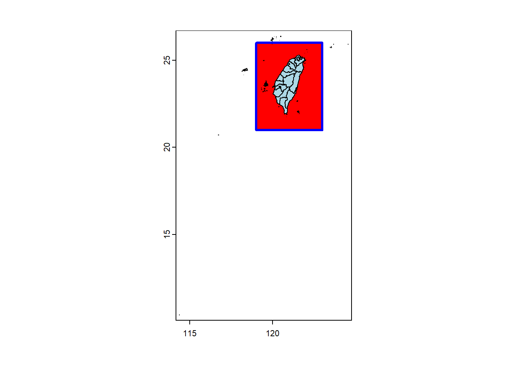
- Cover
cover is a combination of intersect and
union. intersect returns new (intersected)
geometries with the attributes of both input datasets.
union appends the geometries and attributes of the input.
cover returns the intersection and appends the other
geometries and attributes of both datasets.

- Difference
The symmetrical difference of two SpatVectors
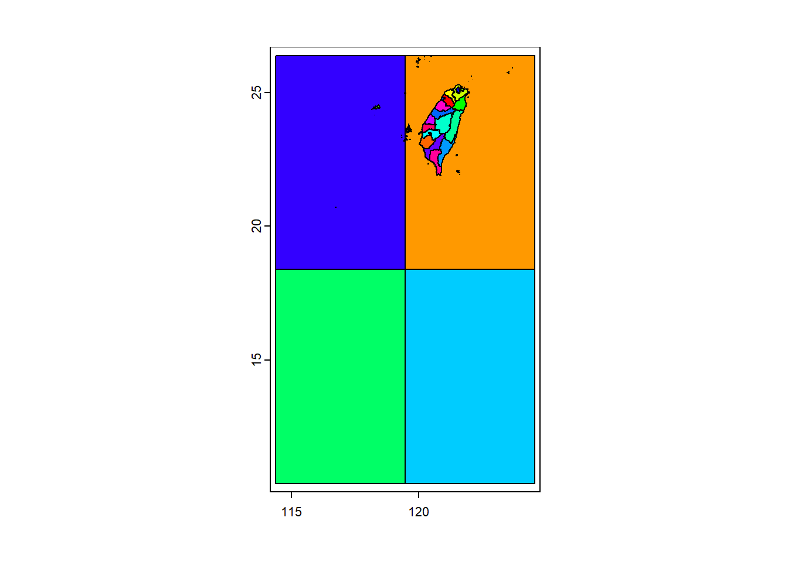
Spatial queries
We can query polygons with points (“point-in-polygon query”).
pts <- matrix(c(117, 122, 117, 122, 15, 15, 23, 23), ncol=2)
spts <- vect(pts, crs=crs(Taiwan))
plot(z, col='light blue', lwd=2)
points(spts, col='light gray', pch=20, cex=6)
text(spts, 1:nrow(pts), col='red', font=2, cex=1.5)
lines(Taiwan, col='blue', lwd=2)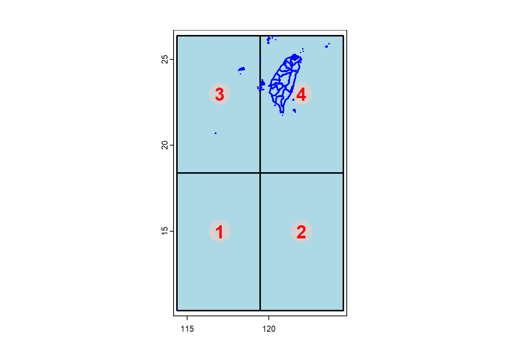
extract is used for queries between SpatVector and
SpatRaster objects, and also for queries between SpatVectors.
## id.y id.x
## [1,] 1 NaN
## [2,] 2 NaN
## [3,] 3 NaN
## [4,] 4 NaN
## [5,] 5 NaN
## [6,] 6 NaN
## [7,] 7 NaN
## [8,] 8 NaN
## [9,] 9 NaN
## [10,] 10 NaN
## [11,] 11 NaN
## [12,] 12 NaN
## [13,] 13 NaN
## [14,] 14 NaN
## [15,] 15 NaN
## [16,] 16 NaN
## [17,] 17 NaN
## [18,] 18 NaN
## [19,] 19 NaN
## [20,] 20 NaN
## [21,] 21 NaN
## [22,] 22 NaNRaster data manipulation
terra has a large number of functions, not all of them
are discussed here, and those that are discussed are mentioned only
briefly. See the help files of the package for more information on
individual functions and help("terra-package") for an index
of functions by topic.
Creating SpatRaster objects
A SpatRaster can easily be created from scratch using
the function rast. The default settings will create a
global raster data structure with a longitude/latitude coordinate
reference system and 1 by 1 degree cells. You can change these settings
by providing additional arguments such as xmin,
nrow, ncol, and/or crs, to the
function. You can also change these parameters after creating the
object. If you set the projection, this is only to properly define it,
not to change it. To transform a SpatRaster to another
coordinate reference system (projection) you can use the
project function.
Here is an example of creating and changing a SpatRaster object ‘r’ from scratch.
## class : SpatRaster
## dimensions : 180, 360, 1 (nrow, ncol, nlyr)
## resolution : 1, 1 (x, y)
## extent : -180, 180, -90, 90 (xmin, xmax, ymin, ymax)
## coord. ref. : lon/lat WGS 84with some other parameters
These parameters can be changed. Resolution:
## [1] 55.55556 55.55556## [1] 100 100Change the number of columns (this affects the resolution).
## [1] 20## [1] 18## [1] 111.1111 100.0000Set the coordinate reference system (CRS) (i.e., define the projection).
## class : SpatRaster
## dimensions : 10, 18, 1 (nrow, ncol, nlyr)
## resolution : 111.1111, 100 (x, y)
## extent : -1000, 1000, -100, 900 (xmin, xmax, ymin, ymax)
## coord. ref. : +proj=utm +zone=48 +datum=WGS84 +units=m +no_defsThe object x created in the examples above only consists
of the raster geometry, that is, we have defined the number of
rows and columns, and where the raster is located in geographic space,
but there are no cell-values associated with it. Setting and accessing
values is illustrated below.
First another example empty raster geometry.
## [1] 100## [1] FALSEUse the values function.
Another example:
## [1] TRUEsources(r) # Get the data sources of a SpatRaster: Sources are either files (or similar resources) or "", meaning that they are in memory. ## [1] ""## [1] 0.8966972 0.2655087 0.3721239 0.5728534 0.9082078 0.2016819 0.8983897 0.9446753 0.6607978 0.6291140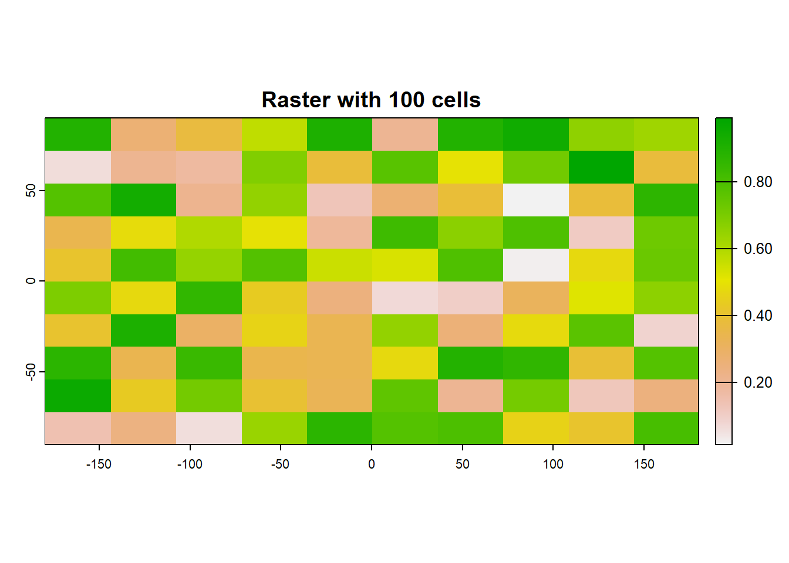
In some cases, for example when you change the number of columns or
rows, you will lose the values associated with the
SpatRaster if there were any (or the link to a file if
there was one). The same applies, in most cases, if you change the
resolution directly (as this can affect the number of rows or columns).
Values are not lost when changing the extent as this change adjusts the
resolution, but does not change the number of rows or columns.
## [1] TRUE## [1] 36 18## [1] 10 10 1## SpatExtent : -180, 180, -90, 90 (xmin, xmax, ymin, ymax)Now change the maximum x coordinate of the extent (bounding box) of
the SpatRaster.
## [1] TRUE## [1] 18 18## [1] 10 10 1And the number of columns (the values disappear)
## [1] FALSE## [1] 30 18## [1] 10 6 1## [1] 0While we can create a SpatRaster from scratch, it is
more common to do so from a file. The terra package can use
raster files in several formats, including GeoTiff, ESRI, ENVI, and
ERDAS.
A notable feature of the terra package is that it can
work with raster datasets that are stored on disk and are too large to
be loaded into memory (RAM). The package can work with large files
because the objects it creates from these files only contain information
about the structure of the data, such as the number of rows and columns,
the spatial extent, and the filename, but it does not attempt to read
all the cell values in memory. In computations with these objects, data
is processed in chunks. If no output filename is specified to a
function, and the output raster is too large to keep in memory, the
results are written to a temporary file.
Below we first we get the name of an example raster file that is
installed with the terra package. Do not use this
system.file construction for your own files. Just type the file name as
you would do for any other file, but don’t forget to use forward slashes
as path separators.
## [1] "elev.tif"That’s teh file with the elevation of Luxembourg.
## [1] "C:/Users/Vianney Denis/AppData/Local/R/win-library/4.2/terra/ex/elev.tif"## [1] TRUE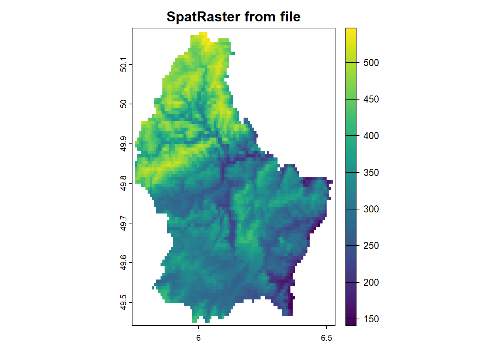
An example with GeoTiff of Taiwan Population density (2015) available here.
tai.pop <- rast('./data/popmap15adj.tif')
par(mfrow=c(1,2))
# plot(tai.pop, main="Taiwan - Population Density (2015)")
# Need a log transformaton
plot(log(tai.pop+1), main="Taiwan - log-transformed Population Density (2015)")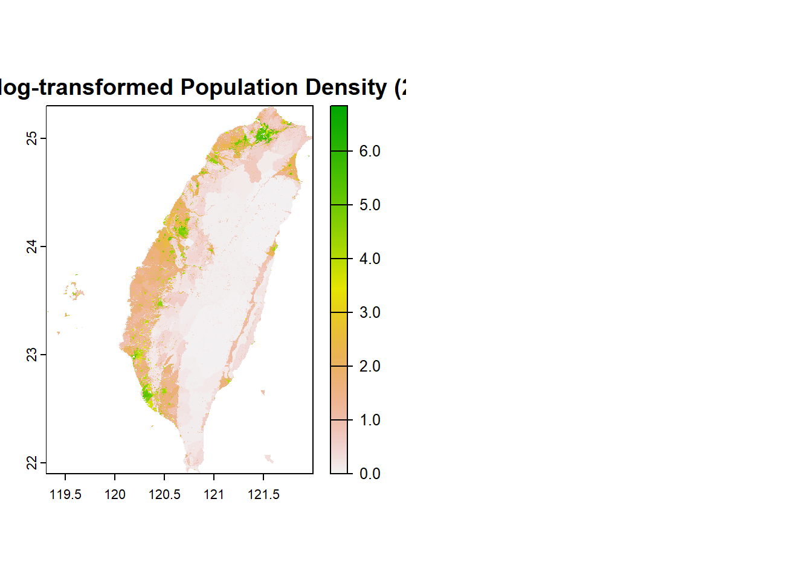
We can also use our previous SpatRaster of elevation of Taiwan in a nicer map:
library(geodata)
library(ggplot2)
library(ggspatial)
ele <-elevation_30s("TWN", path=tempdir())
ggplot()+
layer_spatial(ele)+
scale_fill_continuous(na.value = 'transparent', name='Elevation (m)')+
ggspatial::annotation_north_arrow(
location = "tl", which_north = "true",
style = ggspatial::north_arrow_nautical(fill = c("grey40", "white"), line_col = "grey20"))+
ggspatial::annotation_scale () +
theme_bw()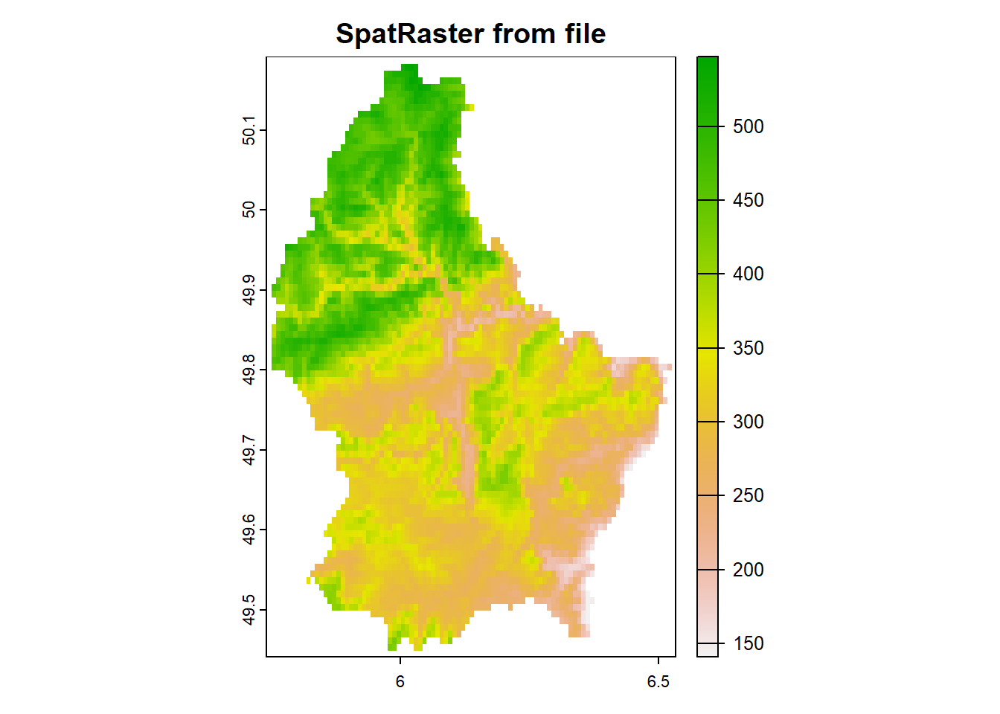
Multi-layer objects can be created in memory or from files.
Create three identical SpatRaster objects:
r1 <- r2 <- r3 <- rast(nrow=10, ncol=10)
# Assign random cell values
values(r1) <- runif(ncell(r1))
values(r2) <- runif(ncell(r2))
values(r3) <- runif(ncell(r3))Combine three SpatRaster:
## class : SpatRaster
## dimensions : 10, 10, 3 (nrow, ncol, nlyr)
## resolution : 36, 18 (x, y)
## extent : -180, 180, -90, 90 (xmin, xmax, ymin, ymax)
## coord. ref. : lon/lat WGS 84
## source(s) : memory
## names : lyr.1, lyr.1, lyr.1
## min values : 0.01307758, 0.02778712, 0.06380247
## max values : 0.99268406, 0.98156346, 0.99607737## [1] 3You can also create a multilayer object from a file.
## [1] "logo.tif"## class : SpatRaster
## dimensions : 77, 101, 3 (nrow, ncol, nlyr)
## resolution : 1, 1 (x, y)
## extent : 0, 101, 0, 77 (xmin, xmax, ymin, ymax)
## coord. ref. : Cartesian (Meter)
## source : logo.tif
## colors RGB : 1, 2, 3
## names : red, green, blue
## min values : 0, 0, 0
## max values : 255, 255, 255## [1] 3Extract a single layer (the second one on this case)
Raster algebra (extra)
Many generic functions that allow for simple and elegant raster
algebra have been implemented for Raster objects, including the normal
algebraic operators such as +, -,
*, /, logical operators such as
>, >=, <,
==, ! and functions like abs,
round, ceiling, floor,
trunc, sqrt, log,
log10, exp, cos,
sin, atan, tan, max,
min, range, prod,
sum, any, all. In these functions
you can mix raster objects with numbers, as long as the first argument
is a raster object.
Create an empty SpatRaster and assign values to
cells.
Now some raster algebra.
You can also use replacement functions.
If you use multiple SpatRaster objects (in functions
where this is relevant, such as range), these must have the same
resolution and origin. The origin of a Raster object is the
point closest to (0, 0) that you could get if you moved from a corner of
a SpatRaster toward that point in steps of the x and y
resolution. Normally these objects would also have the same extent, but
if they do not, the returned object covers the spatial intersection of
the objects used.
When you use multiple multi-layer objects with different numbers or
layers, the ‘shorter’ objects are ‘recycled’. For example, if you
multiply a 4-layer object (a1, a2,
a3, a4) with a 2-layer object
(b1, b2), the result is a four-layer object
(a1*b1, a2*b2, a3*b1,
a3*b2).
## class : SpatRaster
## dimensions : 5, 5, 4 (nrow, ncol, nlyr)
## resolution : 72, 36 (x, y)
## extent : -180, 180, -90, 90 (xmin, xmax, ymin, ymax)
## coord. ref. : lon/lat WGS 84
## source(s) : memory
## names : lyr1, lyr2, lyr3, lyr4
## min values : 3, 6, 7, 10
## max values : 3, 6, 7, 10Summary functions (min, max,
mean, prod, sum,
median, cv, range,
any, all) always return a
SpatRaster object. Perhaps this is not obvious when using
functions like min, sum or
mean.
## class : SpatRaster
## dimensions : 5, 5, 1 (nrow, ncol, nlyr)
## resolution : 72, 36 (x, y)
## extent : -180, 180, -90, 90 (xmin, xmax, ymin, ymax)
## coord. ref. : lon/lat WGS 84
## source(s) : memory
## name : sum
## min value : 17.33333
## max value : 17.33333Use global if you want a single number summarizing the
cell values of each layer.
## sum
## lyr.1 25.0000
## lyr.1.1 25.0000
## lyr.1.2 50.0000
## lyr1 100.0000
## lyr2 108.3333
## lyr1.1 50.0000
## lyr2.1 75.0000‘High-level’ functions (extra)
Several ‘high level’ functions have been implemented for
SpatRaster objects. ‘High level’ functions refer to
functions that you would normally find in a computer program that
supports the analysis of raster data. Here we briefly discuss some of
these functions. All these functions work for raster datasets that
cannot be loaded into memory. See the help files for more detailed
descriptions of each function.
The high-level functions have some arguments in common. The first
argument is typically a SpatRaster ‘x’ or ‘object’. It is
followed by one or more arguments specific to the function (either
additional SpatRaster objects or other arguments), followed
by filename and ... arguments.
The default filename is an empty character "". If you do
not specify a filename, the default action for the function is to return
a raster object that only exists in memory. However, if the
function deems that the raster object to be created would
be too large to hold in memory, it is written to a temporary file
instead.
The ... argument allows for setting additional arguments
that are relevant when writing values to a file: the file format,
datatype (e.g. integer or real values), and a to indicate whether
existing files should be overwritten.
Modifying a SpatRaster object
There are several functions that deal with modifying the spatial
extent of SpatRaster objects. The crop
function lets you take a geographic subset of a larger
raster object. You can crop a SpatRaster by
providing an extent object or another spatial object from which an
extent can be extracted (objects from classes deriving from
Raster and from Spatial in the sp
package). An easy way to get an extent object is to plot a
SpatRaster and then use drawExtent to visually
determine the new extent (bounding box) to provide to the crop
function.
trim crops a SpatRaster by removing the
outer rows and columns that only contain NA values. In
contrast, extend adds new rows and/or columns with
NA values. The purpose of this could be to create a new
SpatRaster with the same Extent of another, larger,
SpatRaster such that they can be used together in other
functions.
The merge function lets you merge 2 or more SpatRaster
objects into a single new object. The input objects must have the same
resolution and origin (such that their cells neatly fit into a single
larger raster). If this is not the case you can first adjust one of the
SpatRaster objects with aggregate/disagg or
resample.
aggregate and disagg allow for changing the
resolution (cell size) of a SpatRaster object. In the case of aggregate,
you need to specify a function determining what to do with the grouped
cell values mean. It is possible to specify different (dis)aggregation
factors in the x and y direction. aggregate and
disagg are the best functions when adjusting cells size
only, with an integer step (e.g. each side 2 times smaller or larger),
but in some cases that is not possible.
For example, you may need nearly the same cell size, while shifting
the cell centers. In those cases, the resample function can
be used. It can do either nearest neighbor assignments (for categorical
data) or bilinear interpolation (for numerical data). Simple linear
shifts of a Raster object can be accomplished with the
shift function or with the extent
function.
With the warp function you can transform values of
SpatRaster object to a new object with a different
coordinate reference system.
Here are some simple examples.
Aggregate and disaggregate.
Crop and merge example.
r1 <- crop(r, ext(-50,0,0,30))
r2 <- crop(r, ext(-10,50,-20, 10))
m <- merge(r1, r2, filename="test.tif", overwrite=TRUE)
plot(m)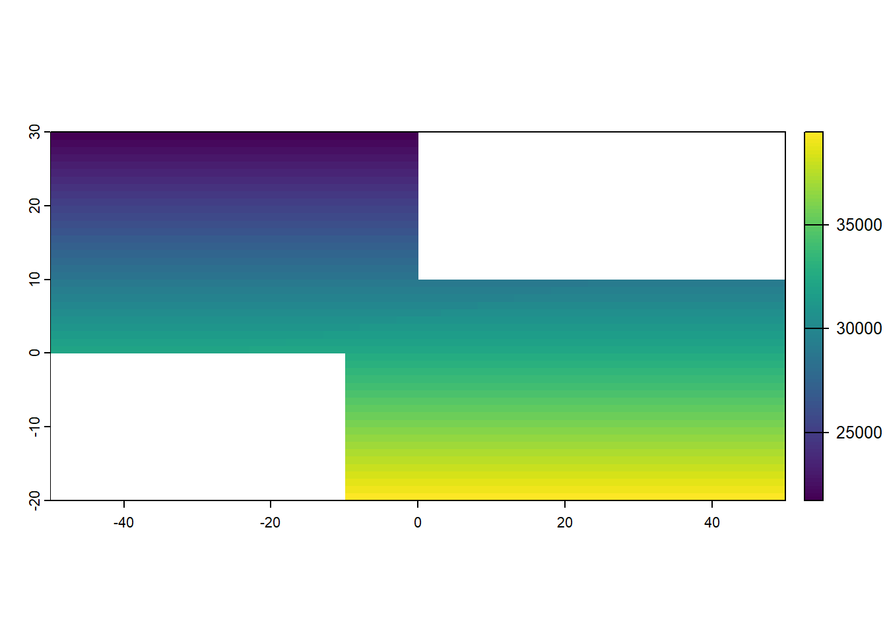
flip lets you flip the data (reverse order) in
horizontal or vertical direction – typically to correct for a
‘communication problem’ between different R packages or a misinterpreted
file. rotate lets you rotate longitude/latitude rasters
that have longitudes from 0 to 360 degrees (often used by
climatologists) to the standard -180 to 180 degrees system. With
t you can rotate a SpatRaster object 90
degrees.
Overlay
app (short for “apply”) allows you to do a computation
for a single SpatRaster object by providing a function,
e.g. sum.
The lapp (layer-apply) function can be used as an
alternative to the raster algebra discussed above.
Classify
You can use classify to replace ranges of values with
single values, or to substitute (replace) single values with other
values.
## lyr.1
## [1,] 1
## [2,] 2
## [3,] 3
## [4,] 4
## [5,] 5
## [6,] 6Set all values above 4 to NA
## lyr.1
## [1,] NA
## [2,] NA
## [3,] NA
## [4,] 4
## [5,] 5
## [6,] 6Divide the first raster with two times the square root of the second raster and add five.
## lyr1
## [1,] NA
## [2,] NA
## [3,] NA
## [4,] 6.000000
## [5,] 6.118034
## [6,] 6.224745Remove from r all values that are NA in w.
## lyr.1
## [1,] NA
## [2,] NA
## [3,] NA
## [4,] 4
## [5,] 5
## [6,] 6Identify the cell values in u that are the same as in
s.
## lyr.1
## [1,] NA
## [2,] NA
## [3,] NA
## [4,] TRUE
## [5,] TRUE
## [6,] TRUEReplace NA values in w with values of
r.
## lyr1
## [1,] NA
## [2,] NA
## [3,] NA
## [4,] 6.000000
## [5,] 6.118034
## [6,] 6.224745Change value between 0 and 2 to 1, etc.
## lyr1
## [1,] NaN
## [2,] NaN
## [3,] NaN
## [4,] 3
## [5,] 3
## [6,] 3Substitute 2 with 40 and 3 with 50.
## lyr1
## [1,] NaN
## [2,] NaN
## [3,] NaN
## [4,] 50
## [5,] 50
## [6,] 50Focal methods
The focal methods computate new values based on the
values in a neighborhood of cells around a focal cell, and putting the
result in the focal cell of the output SpatRaster. The neighborhood is a
user-defined matrix of weights and could approximate any shape by giving
some cells zero weight. It is possible to only computes new values for
cells that are NA in the input SpatRaster.
Distance
There are a number of distance related functions. For example, you
can compute the shortest distance to cells that are not NA,
the shortest distance to any point in a set of points, or the distance
when following grid cells that can be traversed (e.g. excluding water
bodies). direction computes the direction toward (or from)
the nearest cell that is not NA. adjacency
determines which cells are adjacent to other cells. See the
gdistance package for more advanced distance calculations
(cost distance, resistance distance).
Spatial configuration
patches identifies groups of cells that are connected.
boundaries identifies edges, that is, transitions between
cell values. zonal computes the size of each grid cell (for
unprojected rasters), this may be useful to, e.g. compute the area
covered by a certain class on a longitude/latitude raster.
r <- rast(nrow=45, ncol=90)
values(r) <- round(runif(ncell(r))*3)
a <- cellSize(r)
zonal(a, r, "sum")## lyr.1 area
## 1 0 9.391452e+13
## 2 1 1.694339e+14
## 3 2 1.586069e+14
## 4 3 8.811029e+13Predictions
The terra package has two functions to make model
predictions to (potentially very large) rasters. predict takes a
multilayer raster and a fitted model as arguments. Fitted models can be
of various classes, including glm, gam, and RandomForest. The function
interpolate is similar but is for models that use
coordinates as predictor variables, for example in Kriging and spline
interpolation.
Vector to raster conversion
The terra package supports point, line, and polygon to
raster conversion with the rasterize function. For vector
type data (points, lines, polygons), SpatVector objects are
used; but points can also be represented by a two-column matrix (x and
y).
Point to raster conversion is often done with the purpose to analyze
the point data. For example to count the number of distinct species
(represented by point observations) that occur in each raster cell.
rasterize takes a SpatRaster object to set the
spatial extent and resolution, and a function to determine how to
summarize the points (or an attribute of each point) by cell.
Polygon to raster conversion is typically done to create a
SpatRaster that can act as a mask, i.e. to set to
NA a set of cells of a SpatRaster object, or
to summarize values on a raster by zone. For example a country polygon
is transferred to a raster that is then used to set all the cells
outside that country to NA; whereas polygons representing
administrative regions such as states can be transferred to a raster to
summarize raster values by region.
It is also possible to convert the values of a
SpatRaster to points or polygons, using
as.points and as.polygons. Both functions only
return values for cells that are not NA.
Summarizing functions (extra)
When used with a SpatRaster object as first argument,
normal summary statistics functions such as min,
max and mean return a SpatRaster.
You can use global if, instead, you want to obtain a
summary for all cells of a single SpatRaster object. You
can use freq to make a frequency table, or to count the
number of cells with a specified value. Use zonal to
summarize a SpatRaster object using zones (areas with the same integer
number) defined in a SpatRaster and crosstab
to cross-tabulate two SpatRaster objects.
## mean
## lyr.1 0.5179682Zonal stats, below r has the cells we want to summarize,
s defines the zones, and the last argument is the function
to summarize the values of r for each zone in
s.
## lyr.1 lyr.1.1
## 1 0 0.5144431
## 2 1 0.5480089
## 3 2 0.5249257
## 4 3 0.5194031
## 5 4 0.4853966
## 6 5 0.5218401Count cells
## layer value count
## 1 1 0 54
## 2 1 1 102
## 3 1 2 139
## 4 1 3 148
## 5 1 4 133
## 6 1 5 72## layer value count
## 1 1 3 148Cross-tabulate
## lyr.1.1
## lyr.1 0 1 2 3 4 5
## 0 8 13 21 16 24 10
## 1 17 31 42 56 45 24
## 2 19 31 52 54 37 27
## 3 10 27 24 22 27 11Helper functions
The cell number is an important concept in the terra package. Raster
data can be thought of as a matrix, but in a SpatRaster it
is more commonly treated as a vector. Cells are numbered from the upper
left cell to the upper right cell and then continuing on the left side
of the next row, and so on until the last cell at the lower right side
of the raster. There are several helper functions to determine the
column or row number from a cell and vice versa, and to determine the
cell number for x, y coordinates and vice versa.
## [1] 36## [1] 18## [1] 648## [1] 3## [1] 28## [1] 149## x y
## [1,] 95 65## [1] 343## [1] 19## [1] 10Accessing cell values
Cell values can be accessed with several methods. Use
values to get all values or a subset such as a single row
or a block (rectangle) of cell values.
## [1] 324 288 342 313 311 291## elevation
## [1,] 324
## [2,] 288
## [3,] 342
## [4,] 313
## [5,] 311
## [6,] 291You can also read values using cell numbers or coordinates (xy) using
the extract method.
## [1] 3075 3076 3077 3078 3079 3080## elevation
## 1 324
## 2 288
## 3 342
## 4 313
## 5 311
## 6 291## x y
## [1,] 6.029167 49.92083
## [2,] 6.037500 49.92083
## [3,] 6.045833 49.92083
## [4,] 6.054167 49.92083
## [5,] 6.062500 49.92083
## [6,] 6.070833 49.92083## elevation
## 1 324
## 2 288
## 3 342
## 4 313
## 5 311
## 6 291You can also extract values using SpatVector objects.
The default approach for extracting raster values with polygons is that
a polygon has to cover the center of a cell, for the cell to be
included. However, you can use argument weights=TRUE in
which case you get, apart from the cell values, the percentage of each
cell that is covered by the polygon, so that you can apply, e.g., a “50%
area covered” threshold, or compute an area-weighted average.
In the case of lines, any cell that is crossed by a line is included. For lines and points, a cell that is only ‘touched’ is included when it is below or to the right (or both) of the line segment/point (except for the bottom row and right-most column).
In addition, you can use standard R indexing to access values, or to
replace values (assign new values to cells) in a SpatRaster
object. If you replace a value in a SpatRaster object based
on a file, the connection to that file is lost (because it now is
different from that file). Setting raster values for very large files
will be very slow with this approach as each time a new (temporary)
file, with all the values, is written to disk. If you want to overwrite
values in an existing file, you can use update (with
caution!)
## elevation
## 1 324
## 2 288
## 3 342
## 4 313
## 5 311
## 6 291## elevation
## 1 NA
## 2 NA
## 3 NA
## 4 NA## [1] "C:/Users/Vianney Denis/AppData/Local/R/win-library/4.2/terra/ex/elev.tif"## elevation
## 1 NA
## 2 10
## 3 10
## 4 10## [1] ""Note that in the above examples values are retrieved using cell numbers. That is, a raster is represented as a (one-dimensional) vector. Values can also be inspected using a (two-dimensional) matrix notation. As for R matrices, the first index represents the row number, the second the column number.
## elevation
## 1 NA
## 2 10
## 3 10## elevation
## 1 NA
## 2 10
## 3 10## elevation
## 1 NA
## 2 10
## 3 10
## 4 10
## 5 10## elevation
## 1 10
## 2 NA
## 3 NA
## 4 NA
## 5 NA## elevation
## 1 NA
## 2 10
## 3 10
## 4 NA
## 5 NA
## 6 NA
## 7 NA
## 8 NA
## 9 NA## elevation
## 1 NA
## 2 10
## 3 10
## 4 NA
## 5 NA
## 6 NA
## 7 NA
## 8 NA
## 9 NA## [,1] [,2] [,3] [,4]
## [1,] NA 10 10 10
## [2,] NA NA NA NA
## [3,] NA NA NA NAAccessing values through this type of indexing should be avoided
inside functions as it is less efficient than accessing values via
functions like getValues.
Coercion to other classes
You can convert SpatRaster objects to
Raster* objects defined in the raster package.
## Warning: package 'raster' was built under R version 4.3.0## Loading required package: sp## Warning: package 'sp' was built under R version 4.3.0##
## Attaching package: 'raster'## The following object is masked from 'package:dplyr':
##
## select